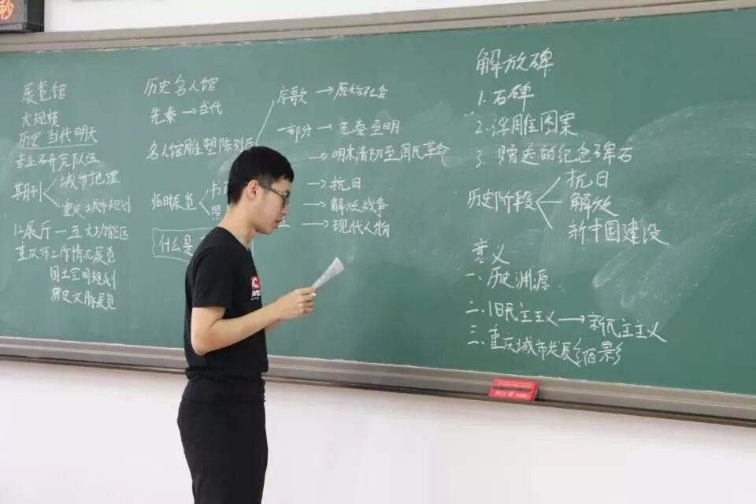
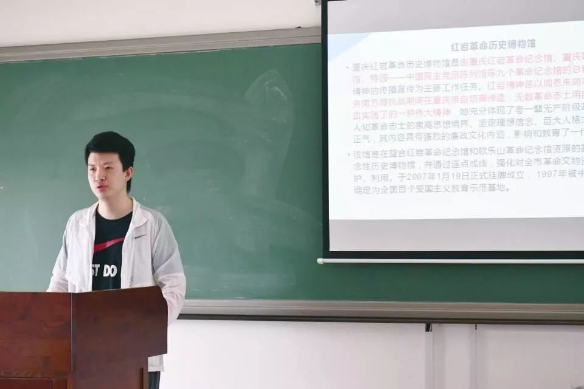
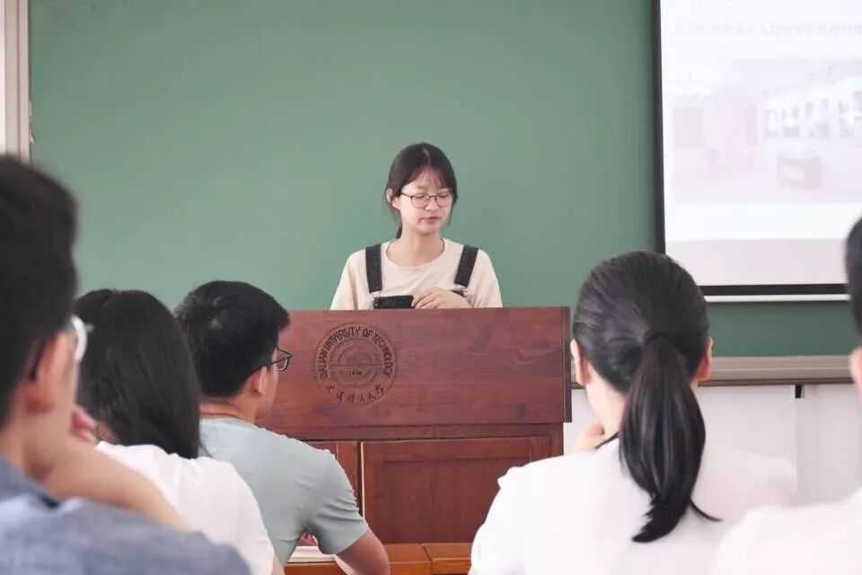
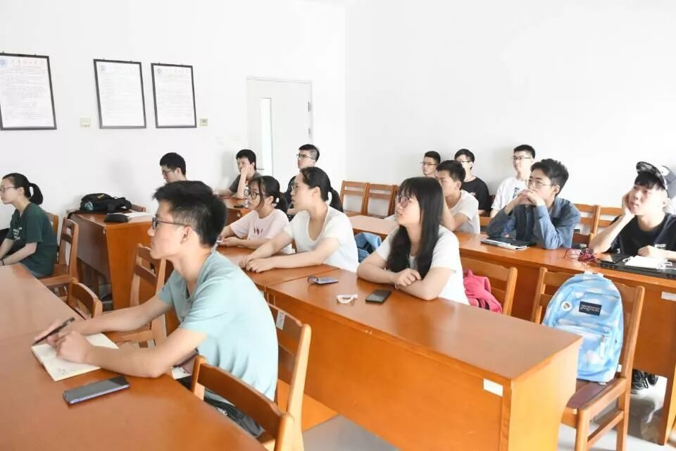
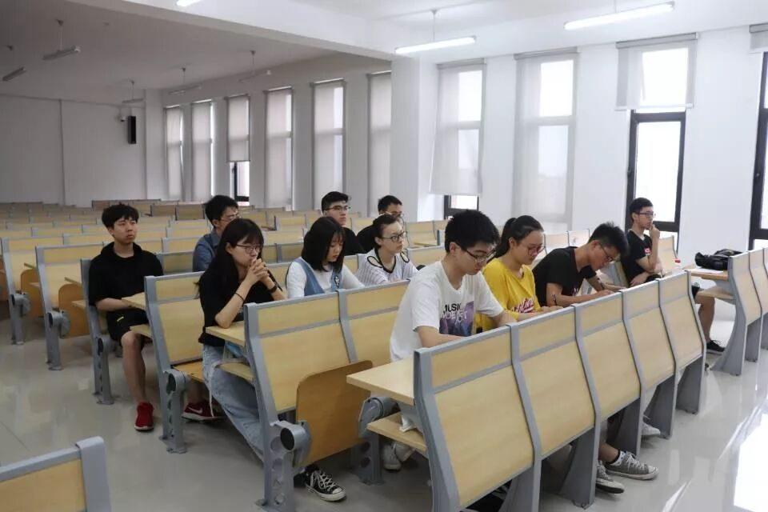
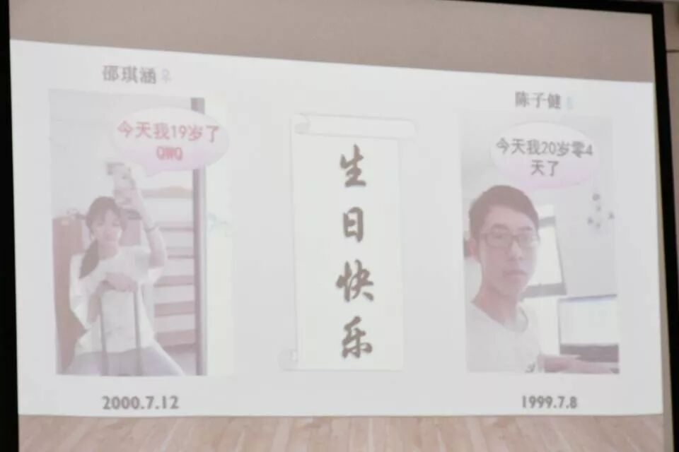
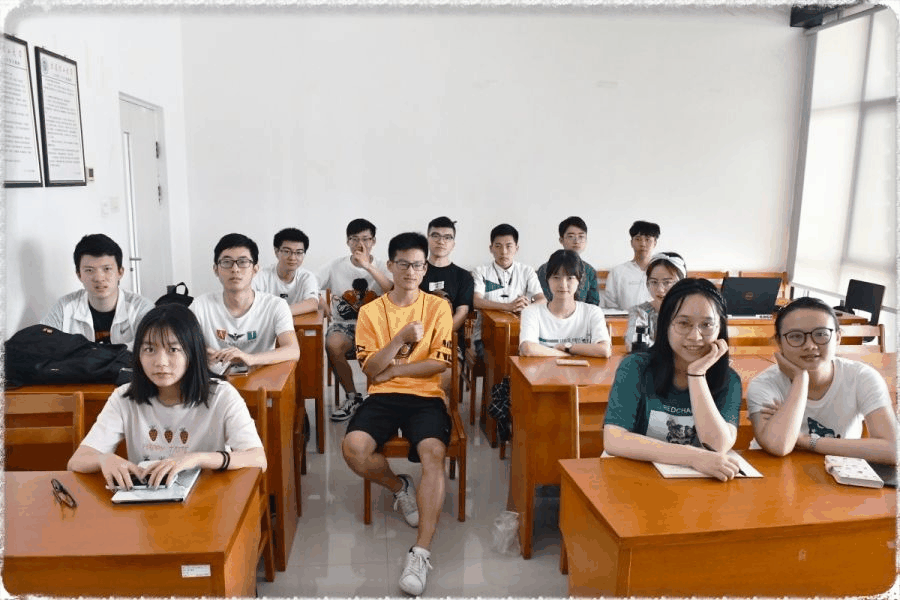

【行者无疆·源洄渝州】三期行者课堂结课了！


本次调研主题是什么？
如何从当地的历史景观
发掘英雄文化与巴渝文化？
行者们又将以什么样的姿态
来调研传承重庆悠久而厚重的人文精神？
🤔🤔🤔🤔🤔🤔🤔🤔🤔🤔
带着这些疑问，行者们聚在一起
开展了一系列行者课堂。

当沧桑淹没历史，
多少英雄血洒滩头？
当祥和邂逅生活，
又有多少声腔宛转悠扬？
一座座博物馆都铭刻着重庆的巨变；每一处场景都诉说着往昔的辉煌。讲台上，调研组从宏观角度为我们展现了渝州风貌，从重庆历史名人馆塑像到红岩博物馆，从北培历史文化馆到解放碑的浮雕，再到压轴出场的三峡博物馆。在行者的细心解说下，一步一景都有独特的味道，一碑一石也蕴含着汗青的芳香。





认真投入的行者们！！！


铭记历史，品味文化。
当文学大家为时代赋词，
多少词句掷地铿锵？
当千年古镇与网红相遇，
又会碰撞出多少奇趣？
从川剧的笙箫到巴渝民俗文化村的古庙，从木洞镇的蜜枣榨菜到丰盛古镇的水响石，还有久负盛名的磁器口古镇。别出心裁的巴渝文化介绍、令人耳目一新的科普视频，都为行者课堂平添了一份趣味，让行者们对重庆之行充满期待。

😎We are 伐木累！😎
在第二次行者课堂，队长最后安排了采访和发放问卷的任务后，将PPT转到了暖心的一页——悄悄告诉你，最近有着两位行者的破壳日哦！😬😬在行者们温暖的《祝你生日快乐》的歌声中，行者课堂落下帷幕。


思者无域，行者无疆。历史长河奔腾不息，多少物是人非。总有一些名字那么耀眼，总有一些文化如此醇香。行者课堂到这里就要暂告一段落，但行者们的脚步从未停歇，文化调研，我们一直在路上💪

来源丨行者无疆实践团
文字丨张锐
排版丨康艳虎
审核丨邓子孚 段智然
行者无疆实践团
QQ：2758025831

随行者一起认识世界
长按二维码关注